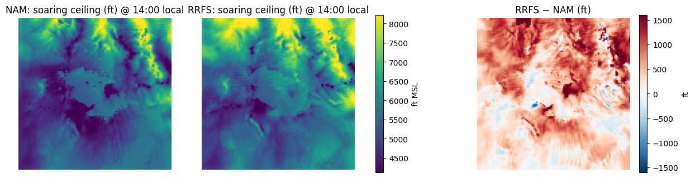
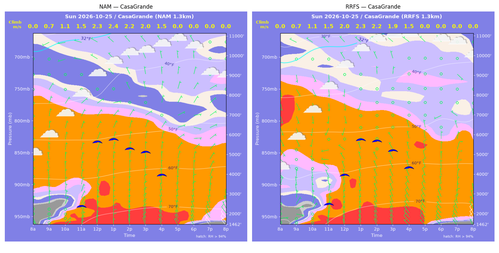
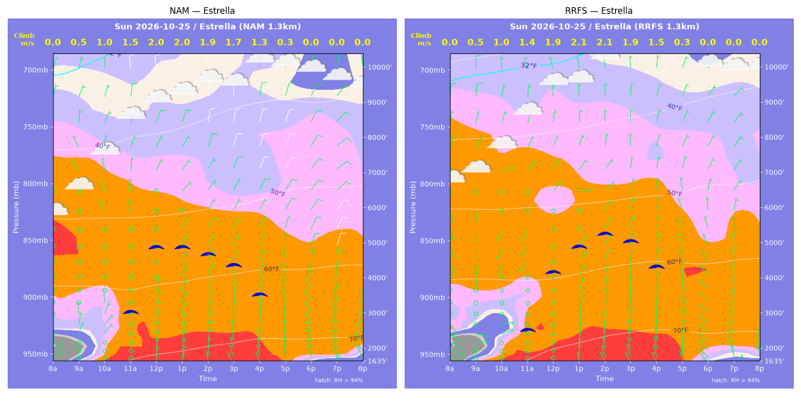
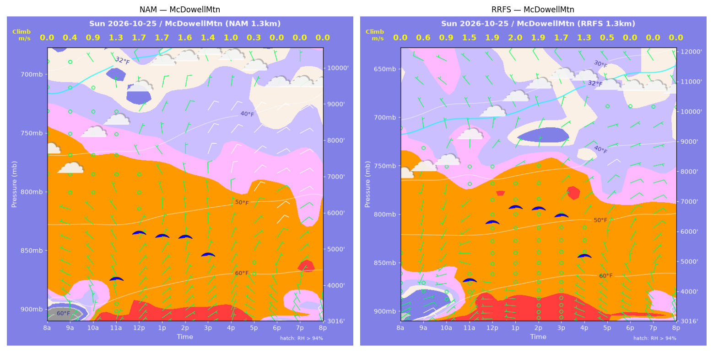
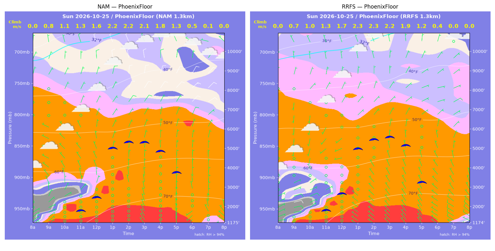
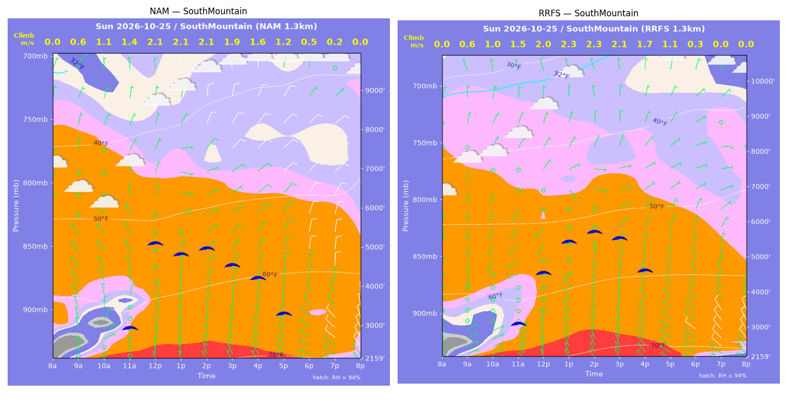
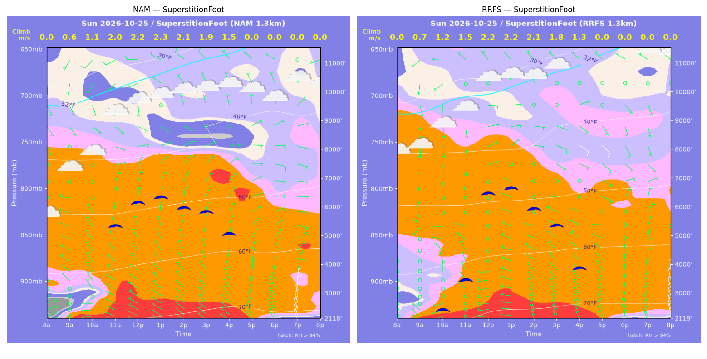
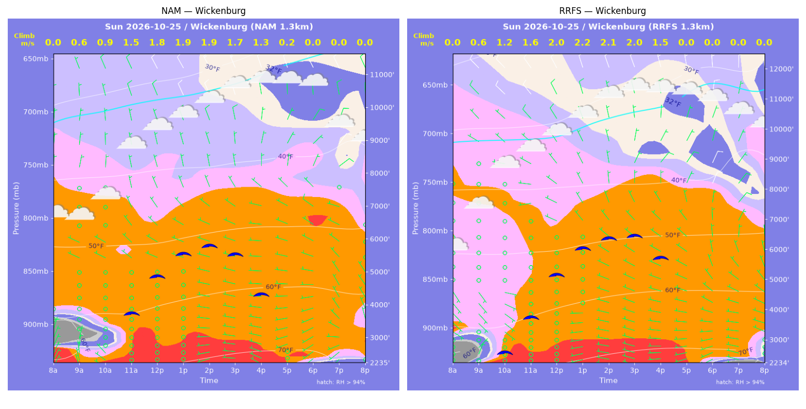

../runs/ab-phoenix-nam — model nam, cycle 2026-10-24 18z, dx 1.3333333740234374 km, 13 hours, grid 114×114../runs/ab-phoenix-rrfs — model rrfs, cycle 2026-10-24 18z, dx 1.3333333740234374 km, 13 hours, grid 114×114Grids identical; afternoon = 12:00–17:59 local (UTC-7). Δ = RRFS − NAM.
| Site | terrain ft | BL top (AGL) med|Δ| / bias (ft) | w* med|Δ| / bias (fpm) | Soaring ceiling med|Δ| / bias (ft) | BL wind speed med|Δ| / bias (kt) | BL wind dir med|Δ| / bias (deg) | 2 m temperature med|Δ| / bias (F) | Sfc LCL (AGL) med|Δ| / bias (ft) | Sensible heat flux med|Δ| / bias (W/m2) |
|---|---|---|---|---|---|---|---|---|---|
| PhoenixFloor | 1175 | 254 / +61 | 16 / +11 | 232 / +62 | 3 / -3 | 20 / +1 | 1 / +1 | 659 / +645 | 16 / +14 |
| SouthMountain | 2159 | 776 / +351 | 28 / +11 | 669 / +166 | 3 / -2 | 28 / -20 | 2 / +2 | 1063 / +1041 | 5 / +3 |
| SuperstitionFoot | 2118 | 517 / -174 | 12 / -15 | 324 / -168 | 3 / -3 | 34 / -19 | 1 / +1 | 761 / +1037 | 21 / -18 |
| Estrella | 1635 | 899 / +759 | 23 / +12 | 628 / +225 | 2 / -1 | 19 / +11 | 1 / +1 | 564 / +634 | 8 / +9 |
| Wickenburg | 2236 | 727 / +713 | 48 / +32 | 532 / +613 | 1 / +1 | 31 / +28 | 1 / +1 | 570 / +597 | 42 / +35 |
| CasaGrande | 1463 | 613 / +28 | 5 / -9 | 228 / -138 | 1 / +0 | 110 / +32 | 1 / +1 | 566 / +569 | 7 / -4 |
| McDowellMtn | 3016 | 1728 / +1510 | 61 / +58 | 1421 / +1254 | 2 / -1 | 7 / +10 | 1 / +1 | 625 / +582 | 28 / +25 |
| Metric | n | median |Δ| | p90 |Δ| | bias |
|---|---|---|---|---|
| BL top (AGL) (ft) | 42 | 709 | 1761 | +464 |
| w* (fpm) | 42 | 25 | 57 | +14 |
| Soaring ceiling (ft) | 42 | 476 | 1409 | +288 |
| BL wind speed (kt) | 42 | 2 | 4 | -1 |
| BL wind dir (deg) | 42 | 24 | 113 | +6 |
| 2 m temperature (F) | 42 | 1 | 2 | +1 |
| Sfc LCL (AGL) (ft) | 42 | 670 | 1162 | +729 |
| Sensible heat flux (W/m2) | 42 | 12 | 35 | +9 |
diffmap_tol.png| local | BL top NAM/RRFS ft | w* NAM/RRFS fpm | ceiling NAM/RRFS ft | BL wind NAM/RRFS | T2 NAM/RRFS F | HFX NAM/RRFS |
|---|---|---|---|---|---|---|
| 08:00 | 0 / 0 | 0 / 0 | 1175 / 1175 | 3kt@049 / 2kt@098 | 60 / 59 | 0 / 0 |
| 09:00 | 786 / 657 | 153 / 135 | 1175 / 1175 | 4kt@064 / 4kt@080 | 65 / 64 | 69 / 57 |
| 10:00 | 1366 / 1121 | 218 / 206 | 1175 / 1175 | 4kt@060 / 7kt@067 | 68 / 68 | 117 / 121 |
| 11:00 | 1664 / 1644 | 260 / 266 | 1854 / 1876 | 4kt@039 / 5kt@060 | 71 / 72 | 164 / 177 |
| 12:00 | 2456 / 2671 | 315 / 336 | 2503 / 2700 | 4kt@357 / 2kt@280 | 74 / 75 | 199 / 221 |
| 13:00 | 5723 / 5615 | 437 / 449 | 5000 / 4970 | 5kt@032 / 3kt@046 | 76 / 77 | 228 / 252 |
| 14:00 | 6141 / 6245 | 440 / 456 | 5293 / 5423 | 8kt@036 / 5kt@045 | 77 / 78 | 218 / 239 |
| 15:00 | 6281 / 6574 | 414 / 430 | 5270 / 5536 | 8kt@037 / 4kt@044 | 78 / 79 | 178 / 190 |
| 16:00 | 6168 / 6476 | 349 / 366 | 4808 / 5113 | 7kt@030 / 4kt@055 | 78 / 79 | 109 / 119 |
| 17:00 | 6316 / 5869 | 259 / 246 | 3716 / 3220 | 6kt@032 / 5kt@060 | 78 / 79 | 43 / 40 |
| 18:00 | 1865 / 2674 | 106 / 69 | 1175 / 1175 | 5kt@354 / 5kt@325 | 78 / 78 | 10 / 2 |
| 19:00 | 107 / 1244 | 21 / 0 | 1175 / 1175 | 2kt@296 / 7kt@318 | 77 / 77 | 1 / -4 |
| 20:00 | 761 / 590 | 0 / 0 | 1175 / 1175 | 5kt@352 / 8kt@311 | 76 / 75 | -1 / -4 |
| local | BL top NAM/RRFS ft | w* NAM/RRFS fpm | ceiling NAM/RRFS ft | BL wind NAM/RRFS | T2 NAM/RRFS F | HFX NAM/RRFS |
|---|---|---|---|---|---|---|
| 08:00 | 0 / 0 | 0 / 0 | 2159 / 2159 | 3kt@342 / 2kt@048 | 61 / 61 | 0 / 0 |
| 09:00 | 436 / 462 | 109 / 117 | 2159 / 2159 | 0kt@291 / 6kt@063 | 64 / 65 | 45 / 53 |
| 10:00 | 1034 / 994 | 211 / 206 | 2159 / 2159 | 3kt@015 / 2kt@040 | 65 / 67 | 139 / 135 |
| 11:00 | 1815 / 1950 | 278 / 301 | 3000 / 3163 | 5kt@352 / 1kt@255 | 67 / 69 | 183 / 216 |
| 12:00 | 4531 / 3761 | 420 / 403 | 5134 / 4579 | 4kt@020 / 3kt@216 | 70 / 71 | 253 / 271 |
| 13:00 | 4092 / 4874 | 420 / 448 | 4844 / 5451 | 3kt@070 / 2kt@127 | 71 / 72 | 281 / 287 |
| 14:00 | 4302 / 5251 | 417 / 447 | 4971 / 5702 | 5kt@066 / 3kt@082 | 72 / 73 | 261 / 265 |
| 15:00 | 3862 / 5155 | 374 / 413 | 4539 / 5515 | 7kt@046 / 3kt@066 | 72 / 74 | 210 / 214 |
| 16:00 | 3734 / 4305 | 322 / 334 | 4216 / 4609 | 8kt@041 / 5kt@031 | 72 / 74 | 139 / 135 |
| 17:00 | 3566 / 2849 | 241 / 214 | 3314 / 2159 | 9kt@031 / 6kt@354 | 72 / 73 | 61 / 53 |
| 18:00 | 987 / 351 | 108 / 52 | 2159 / 2159 | 5kt@322 / 8kt@292 | 71 / 72 | 20 / 6 |
| 19:00 | 227 / 1157 | 43 / 0 | 2159 / 2159 | 8kt@295 / 9kt@324 | 71 / 71 | 5 / -5 |
| 20:00 | 896 / 700 | 0 / 0 | 2159 / 2159 | 9kt@335 / 9kt@327 | 70 / 70 | -1 / -4 |
| local | BL top NAM/RRFS ft | w* NAM/RRFS fpm | ceiling NAM/RRFS ft | BL wind NAM/RRFS | T2 NAM/RRFS F | HFX NAM/RRFS |
|---|---|---|---|---|---|---|
| 08:00 | 0 / 0 | 0 / 0 | 2118 / 2119 | 5kt@066 / 2kt@041 | 58 / 64 | 0 / 0 |
| 09:00 | 579 / 801 | 127 / 145 | 2118 / 2119 | 2kt@328 / 1kt@325 | 65 / 67 | 54 / 57 |
| 10:00 | 1221 / 1639 | 215 / 228 | 2118 / 2469 | 5kt@325 / 3kt@353 | 68 / 69 | 125 / 111 |
| 11:00 | 5128 / 2692 | 391 / 300 | 5361 / 3497 | 4kt@042 / 3kt@303 | 71 / 71 | 180 / 154 |
| 12:00 | 6006 / 6531 | 440 / 435 | 6145 / 6475 | 6kt@072 / 5kt@081 | 72 / 73 | 220 / 194 |
| 13:00 | 6195 / 6715 | 451 / 442 | 6313 / 6630 | 7kt@069 / 4kt@081 | 73 / 74 | 229 / 199 |
| 14:00 | 5795 / 5885 | 422 / 406 | 5930 / 5916 | 7kt@068 / 3kt@095 | 73 / 74 | 201 / 175 |
| 15:00 | 5901 / 5387 | 381 / 356 | 5799 / 5333 | 7kt@076 / 4kt@118 | 74 / 74 | 146 / 129 |
| 16:00 | 5810 / 4283 | 294 / 259 | 5024 / 3847 | 5kt@091 / 1kt@311 | 74 / 74 | 68 / 62 |
| 17:00 | 2424 / 2285 | 0 / 0 | 2118 / 2119 | 6kt@015 / 4kt@314 | 73 / 73 | -1 / -2 |
| 18:00 | 1099 / 567 | 0 / 0 | 2118 / 2119 | 8kt@340 / 6kt@349 | 68 / 69 | -7 / -4 |
| 19:00 | 1154 / 694 | 0 / 0 | 2118 / 2119 | 10kt@006 / 7kt@339 | 66 / 67 | -10 / -3 |
| 20:00 | 728 / 1127 | 0 / 0 | 2118 / 2119 | 8kt@008 / 10kt@351 | 66 / 66 | -21 / -10 |
| local | BL top NAM/RRFS ft | w* NAM/RRFS fpm | ceiling NAM/RRFS ft | BL wind NAM/RRFS | T2 NAM/RRFS F | HFX NAM/RRFS |
|---|---|---|---|---|---|---|
| 08:00 | 0 / 0 | 0 / 0 | 1635 / 1635 | 2kt@029 / 5kt@105 | 59 / 62 | 0 / 0 |
| 09:00 | 300 / 379 | 92 / 108 | 1635 / 1635 | 1kt@080 / 2kt@089 | 66 / 66 | 39 / 50 |
| 10:00 | 1288 / 1050 | 190 / 195 | 1635 / 1635 | 3kt@012 / 2kt@060 | 69 / 69 | 82 / 108 |
| 11:00 | 2915 / 2083 | 292 / 276 | 3084 / 2590 | 2kt@329 / 1kt@253 | 72 / 72 | 132 / 157 |
| 12:00 | 5141 / 4187 | 393 / 369 | 4898 / 4196 | 4kt@030 / 2kt@120 | 73 / 74 | 182 / 186 |
| 13:00 | 5089 / 5033 | 399 / 409 | 4891 / 4895 | 4kt@040 / 3kt@063 | 74 / 75 | 193 / 211 |
| 14:00 | 4901 / 5586 | 376 / 407 | 4667 / 5246 | 5kt@030 / 3kt@029 | 74 / 76 | 167 / 188 |
| 15:00 | 4760 / 5604 | 336 / 365 | 4357 / 5034 | 7kt@023 / 3kt@001 | 75 / 76 | 123 / 134 |
| 16:00 | 4481 / 5545 | 264 / 286 | 3522 / 4313 | 6kt@024 / 5kt@007 | 75 / 76 | 63 / 66 |
| 17:00 | 934 / 3906 | 60 / 65 | 1635 / 1635 | 4kt@346 / 6kt@337 | 74 / 75 | 3 / 1 |
| 18:00 | 321 / 281 | 0 / 0 | 1635 / 1635 | 4kt@335 / 4kt@305 | 71 / 70 | -0 / -1 |
| 19:00 | 586 / 84 | 0 / 0 | 1635 / 1635 | 7kt@335 / 2kt@036 | 69 / 69 | -2 / -1 |
| 20:00 | 84 / 84 | 0 / 0 | 1635 / 1635 | 3kt@013 / 3kt@025 | 68 / 68 | -1 / -2 |
| local | BL top NAM/RRFS ft | w* NAM/RRFS fpm | ceiling NAM/RRFS ft | BL wind NAM/RRFS | T2 NAM/RRFS F | HFX NAM/RRFS |
|---|---|---|---|---|---|---|
| 08:00 | 0 / 0 | 0 / 0 | 2236 / 2235 | 5kt@027 / 3kt@292 | 56 / 56 | 0 / 0 |
| 09:00 | 722 / 411 | 125 / 113 | 2236 / 2235 | 4kt@015 / 4kt@025 | 63 / 62 | 39 / 53 |
| 10:00 | 879 / 1732 | 171 / 230 | 2236 / 2637 | 2kt@027 / 4kt@125 | 66 / 67 | 84 / 106 |
| 11:00 | 3134 / 2885 | 290 / 313 | 3777 / 3784 | 3kt@308 / 2kt@051 | 70 / 70 | 116 / 163 |
| 12:00 | 4468 / 4667 | 352 / 390 | 4883 / 5182 | 3kt@316 / 3kt@296 | 71 / 71 | 146 / 195 |
| 13:00 | 5331 / 5751 | 378 / 425 | 5543 / 6029 | 4kt@340 / 4kt@331 | 72 / 73 | 152 / 205 |
| 14:00 | 5734 / 6252 | 373 / 421 | 5765 / 6344 | 4kt@340 / 6kt@357 | 73 / 74 | 135 / 185 |
| 15:00 | 5744 / 6680 | 334 / 385 | 5503 / 6426 | 4kt@331 / 6kt@025 | 73 / 74 | 96 / 132 |
| 16:00 | 5439 / 6692 | 253 / 302 | 4296 / 5691 | 4kt@316 / 7kt@040 | 73 / 74 | 43 / 63 |
| 17:00 | 4636 / 5587 | 39 / 0 | 2236 / 2235 | 6kt@301 / 4kt@343 | 73 / 73 | -1 / -1 |
| 18:00 | 84 / 354 | 0 / 0 | 2236 / 2235 | 2kt@216 / 4kt@248 | 69 / 68 | -1 / -2 |
| 19:00 | 329 / 300 | 0 / 0 | 2236 / 2235 | 5kt@249 / 6kt@281 | 66 / 66 | -3 / -5 |
| 20:00 | 83 / 83 | 0 / 0 | 2236 / 2235 | 4kt@266 / 3kt@046 | 65 / 64 | -1 / -2 |
| local | BL top NAM/RRFS ft | w* NAM/RRFS fpm | ceiling NAM/RRFS ft | BL wind NAM/RRFS | T2 NAM/RRFS F | HFX NAM/RRFS |
|---|---|---|---|---|---|---|
| 08:00 | 0 / 0 | 0 / 0 | 1463 / 1462 | 2kt@120 / 2kt@072 | 59 / 56 | 0 / 0 |
| 09:00 | 544 / 463 | 138 / 133 | 1463 / 1462 | 1kt@130 / 2kt@115 | 64 / 63 | 74 / 77 |
| 10:00 | 1132 / 1090 | 216 / 214 | 1463 / 1462 | 4kt@018 / 6kt@016 | 68 / 68 | 137 / 138 |
| 11:00 | 1951 / 2082 | 291 / 300 | 2426 / 2528 | 6kt@009 / 6kt@353 | 72 / 73 | 196 / 201 |
| 12:00 | 6158 / 3951 | 451 / 393 | 5634 / 3970 | 3kt@051 / 3kt@304 | 75 / 75 | 232 / 240 |
| 13:00 | 6248 / 6258 | 463 / 459 | 5739 / 5730 | 3kt@079 / 4kt@193 | 76 / 77 | 248 / 241 |
| 14:00 | 5737 / 6262 | 428 / 438 | 5262 / 5649 | 3kt@040 / 3kt@189 | 76 / 77 | 214 / 209 |
| 15:00 | 5759 / 5927 | 388 / 383 | 5090 / 5165 | 2kt@054 / 1kt@174 | 77 / 78 | 158 / 148 |
| 16:00 | 4992 / 5694 | 291 / 294 | 3925 / 4306 | 2kt@039 / 2kt@346 | 76 / 78 | 77 / 69 |
| 17:00 | 3432 / 4402 | 0 / 0 | 1463 / 1462 | 5kt@012 / 8kt@341 | 75 / 75 | -2 / -4 |
| 18:00 | 919 / 515 | 0 / 0 | 1463 / 1462 | 7kt@340 / 8kt@323 | 70 / 69 | -4 / -7 |
| 19:00 | 443 / 302 | 0 / 0 | 1463 / 1462 | 9kt@325 / 8kt@325 | 68 / 67 | -9 / -6 |
| 20:00 | 362 / 395 | 0 / 0 | 1463 / 1462 | 9kt@320 / 10kt@332 | 66 / 65 | -10 / -7 |
| local | BL top NAM/RRFS ft | w* NAM/RRFS fpm | ceiling NAM/RRFS ft | BL wind NAM/RRFS | T2 NAM/RRFS F | HFX NAM/RRFS |
|---|---|---|---|---|---|---|
| 08:00 | 0 / 0 | 0 / 0 | 3016 / 3016 | 3kt@008 / 4kt@046 | 57 / 59 | 0 / 0 |
| 09:00 | 245 / 447 | 77 / 111 | 3016 / 3016 | 4kt@037 / 8kt@062 | 60 / 61 | 25 / 45 |
| 10:00 | 1082 / 887 | 168 / 178 | 3016 / 3016 | 4kt@325 / 3kt@060 | 63 / 63 | 62 / 96 |
| 11:00 | 2905 / 2864 | 264 / 292 | 4243 / 4434 | 4kt@317 / 4kt@251 | 65 / 66 | 91 / 130 |
| 12:00 | 4441 / 5427 | 326 / 370 | 5491 / 6339 | 2kt@354 / 2kt@353 | 66 / 68 | 112 / 141 |
| 13:00 | 4249 / 6019 | 327 / 391 | 5393 / 6826 | 3kt@335 / 5kt@017 | 67 / 68 | 119 / 151 |
| 14:00 | 4336 / 6022 | 316 / 381 | 5361 / 6772 | 6kt@355 / 5kt@360 | 68 / 69 | 104 / 139 |
| 15:00 | 4061 / 6059 | 276 / 342 | 4870 / 6527 | 9kt@008 / 4kt@016 | 68 / 70 | 73 / 100 |
| 16:00 | 3544 / 5316 | 202 / 261 | 3016 / 5191 | 7kt@012 / 4kt@021 | 68 / 70 | 31 / 50 |
| 17:00 | 1808 / 2656 | 58 / 107 | 3016 / 3016 | 2kt@360 / 4kt@356 | 68 / 69 | -0 / 6 |
| 18:00 | 732 / 904 | 0 / 0 | 3016 / 3016 | 6kt@322 / 6kt@302 | 65 / 66 | -6 / -4 |
| 19:00 | 684 / 831 | 0 / 0 | 3016 / 3016 | 7kt@333 / 7kt@318 | 63 / 64 | -6 / -6 |
| 20:00 | 554 / 673 | 0 / 0 | 3016 / 3016 | 6kt@003 / 8kt@341 | 62 / 63 | -8 / -7 |
montage_PhoenixFloor.pngmontage_SouthMountain.pngmontage_SuperstitionFoot.pngmontage_Estrella.pngmontage_Wickenburg.pngmontage_CasaGrande.pngmontage_McDowellMtn.png